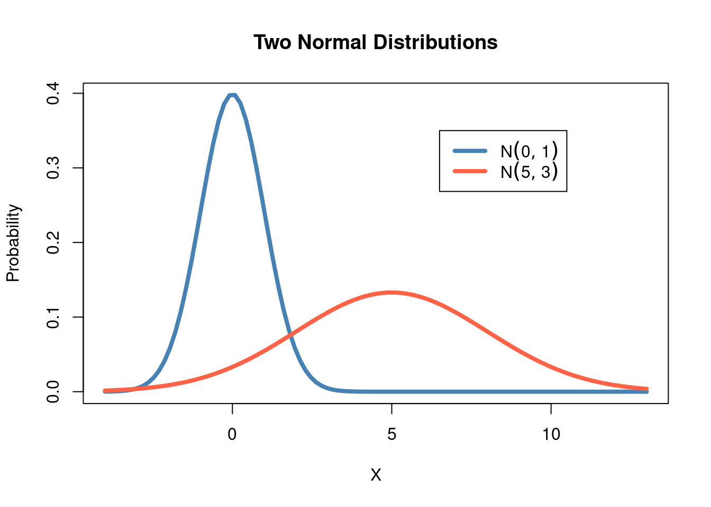
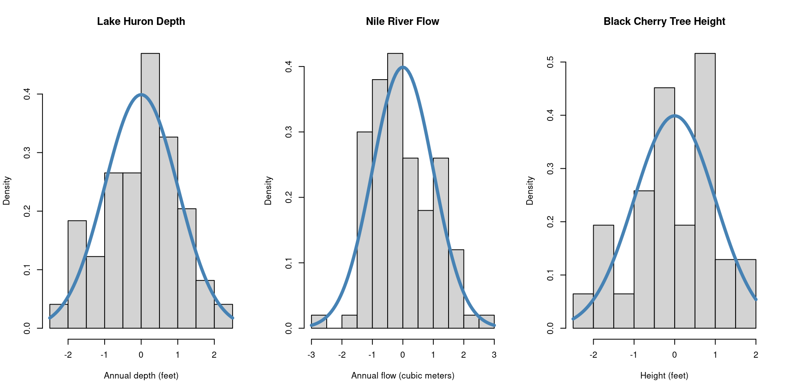

Introduction to Probability Distributions
In Chapter 4, we introduced the idea of random processes, i.e. situations
in which the outcome can not be determined perfectly in advance. Random processes
are defined in terms of the collection of possible events (sample space) and their
associated probabilities. In that chapter, we saw three methods for calculating
probabilities - the enumeration method, the probability function method, and the
simulation method. In this chapter we will expand on the probability function
method, which uses a known function called a probability distribution to
determine the probability of each event.
Probability distributions are closely related to random variables, a numeric
variable that can take on different values depending on the outcome of a random
process. In previous mathematics courses you may have seen variables such as
\(x\) or \(y\) used as placeholder values which are then solved for. For example,
you can solve for the variable \(x\) in \(4x + 5 = 25\), to determine \(x = 5\). By
contrast, the outcome of a random variable cannot be predetermined. Instead,
we talk probabilistically about the likelihood of observing each possible outcome.
Random variables are typically denoted with capital letters, e.g., \(X\) or \(Y\),
whereas the observed outcome of the random process is denoted with lowercase letters
\(x\) or \(y\). For example, flipping a coin three times is a random process. We can
define the random variable \(X\) to represent the number of heads we observe
between the three flips. \(X\) can take on four possible values: 0, 1, 2, or 3. If
we observe 2 heads, we have \(x = 2\).
Most simply, a probability distribution (often just called a distribution)
is a method for taking a possible event as input, and giving us the corresponding
probability as output; the corresponding probability tells us how likely it is
that the specific event will occur, out of all of the possible events. We often
say random variables have or follow a probability distribution, as the
distribution quantifies the probability of observing the possible values a random
variable can take on. We can denote a probability distribution as \(P(X = x)\), or
the probability that the random variable, \(X\), takes on a generic value, \(x\).
There are many useful probability distributions that have
been defined by mathematicians and statisticians to describe a variety of scenarios:
Counting the number of successes in a fixed number of trials that can results
in either success or failure
Counting the number of failures before the first success in a series of success/failure trials
Describing the length of time between events that occur at a constant rate
Describing the blood pressure of adults
One can represent a probability distribution visually using a probability histogram.
On the x-axis, we have the possible outcomes of the random process - the values
the random variable could take on. For each outcome, the bar height represents
the probability of observing that value. For the coin flipping example, the
probabilities of observing each possible number of heads can be represented as:

When looking at a probability histogram, we can characterize the shape of the
distribution analogously to how we talk about a histogram of observed data. We
often use unimodal distributions, which may or may not be skewed. For example,
the above probability histogram shows a unimodal and symmetric distribution.
The beauty of using probability distributions to describe the likelihood of all
outcomes of a random process is its simplicity. Probability distributions rely
on a small number of parameters which determine the distribution’s shape. In
the coin flipping example, we could consider one of the parameters to be the
probability of obtaining heads. We assume that we have a fair coin and that this
probability is 50%. If, instead, we had a weighted coin with a 60% chance of
landing on heads, the probability distribution would change.
With a higher chance of the coin resulting in heads, we now see that the three
flips are more likely to result in 2 or 3 heads, and much less likely to result
in 0 heads. In other words, the distribution is now slightly skewed left.
Because these probabilities can be described by a distribution
function, which depends on the probability of heads, we can easily compute and
compare the probabilities of each outcome depending on the coin’s true chance at
turning up as heads.
Another key concept related to probability distributions and random variables, is
the idea of the expected value. The expected value of a random variable, often
denoted as \(E(X)\), is a weighted average which provides a measure of the central
mass of the probability distribution. The expected value averages over all possible
outcomes of the random variable with each outcome weighted according to its
probability. Returning to the coin flipping example, with a fair coin we have
seen that the probability distribution is:
|
x
|
P(X = x)
|
|
0
|
0.125
|
|
1
|
0.375
|
|
2
|
0.375
|
|
3
|
0.125
|
So the expected value is
\[(0 \times 0.125) + (1 \times 0.375) + (2 \times 0.375) + (3 \times 0.125) = 1.5.\]
Looking at the probability histogram, this value should make sense as it falls
right in the center of the distribution.
Expected values are more easily conceptualized in terms of a game or bet. For
example, consider the following game. You flip a fair coin; if the coin lands on
heads, you win $20 and if the coin lands on tails, you lose $1. Would you play
this game? Assuming you have a spare dollar, the answer is probably yes. Since
you have equal chances of the coin landing on heads or tails, you are just as
likely to win $20 as you are to lose $1. In terms of the expected value, it
would be
\[(20 \times 0.5) + (-1 \times 0.5) = 9.5.\]
The expected value tells us that if you were to play this game over and over,
you would be expected to win $9.5 per game. If instead the game was that for
heads you won $1 and for tails you lost $1, would you still want to play?
Definition 5.1
Probability distribution: A method for assigning probabilities to all possible events
Random variable: A numeric variable whose value depends on the outcome of a random process
Probability histogram: A graphical display of a probability distribution
Parameters: Values associated with a probability distribution that determine the distributions shape
Expected value: The weighted average of the outcomes of a random variable, with weights determined by their probability
Binomial Distribution
The first distribution we will examine in depth is the binomial distribution, which
describes the number of successes in a fixed number of independent trials
that can result in one of two outcomes (success or failure), when each trial has
the same probability of success. We have already seen one example of the
binomial distribution - flipping a coin three times counting the number of flips
that result in heads (success). Each flip has two possible outcomes (heads or
tails), the same probability of heads (50%), and we have predetermined the number
of trials (3 flips). Another example of the binomial distribution is rolling a
six-sided die 10 times and counting the number of rolls that result in a 5 or 6.
In this example, each die roll has a 1/3 chance of turning up a 5 or 6 and the
die will be rolled 10 times.
As you may have noticed from these two examples, the binomial distribution
can be used for various success probabilities and numbers of trials. In fact,
these quantities define the two parameters of the binomial distribution. These
parameters are typically denoted as \(n\) = the number of trials and \(p\) = the probability of
success. The binomial distribution can be written as a function of these parameters
\[
P(X = x) = \binom{n}{x} p^x (1-p)^{n-x}.
\]
While this may look like a nasty formula, don’t be afraid! Probabilities following
a binomial distribution can be easily computed by any statistical software. For
this reason, we will focus on the distribution properties, as opposed to performing
calculations.
For any valid value of \(n\) and \(p\), we can use the binomial distribution
to compute the probability of observing any possible outcome. Valid values of \(n\)
and \(p\) simply mean that the number of trials conducted must be a positive integer
(e.g., 1, 2, 3, …) and that \(p\) is between 0 and 1 (it is a probability after all).
The expected value of the binomial distribution is given by \(E(X) = np\).
To gain an understanding of how these parameters impact the shape of the distribution,
we will use the following applet.
Exercise 5.1
The applet below is designed to help you get familiar with the parameters of the
binomial distribution, and how they impact the probability distribution.
You can change the values of the number of trials \(n\), and
the probability of success \(p\), and the app will display the associated distribution
in a probability histogram.
Use the applet to answer the following questions:
Set \(n = 10\), and change the value of \(p\) (note: you can press the triangular
“play” button to have the app vary \(p\) automatically). What happens to the shape of the
distribution as \(p\) gets closer to 0? What about when \(p\) gets closer to 1?
Now, set \(p = 0.4\) and vary \(n\) over the range of possible inputs. What do
you notice about the x-axis as \(n\) is changing? Explain this trend by referring
back to what \(n\) represents.
Keeping \(p\) constant and varying \(n\) between 20 - 50, does the shape of the
distribution change? What about the location of the distribution?
Exercise 5.2
The applet below is designed to familiarize you with data generated from the
binomial distribution. You can change the values of the number of trials \(n\), and
the probability of success \(p\) to specify the parameters of the population
distribution. Then, you can take a random sample from the distribution.
Definition 5.2
Binomial Distribution: A probability distribution that characterizes the
probabilities of observing some number of successes in a fixed number of
trials, each with two possible outcomes and the same probability of success
Discrete Distribution: Any probability distribution that depicts the
occurrence of countable values
Normal Distribution
Below are three histograms describing various continuous data sources. First, we
have the annual depth of Lake Huron from 1875-1972 in feet. Second, the annual
flow of the river Nile from 1871-1970 in cubic meters. Lastly, we have the recorded
height in feet of 31 black cherry trees. What do these histograms seem to have in common?

What we see here are examples of a normal distribution (also known as a bell curve), one of the most ubiquitous distributions in all of statistics. The normal distribution is characterized by the “bell shape” that is symmetric about it’s mean [but maybe don’t say mean].
Like the binomial, the normal distribution is characterized by two parameters, \(\mu\) and \(\sigma^2\), representing the mean and the variance, respectively. The mean value, \(\mu\), indicates the location of the peak on the x-axis, whereas the variance, \(\sigma^2\), indicates the amount of dispersion about the mean. A random variable \(X\) that follows a normal distribution can be expressed \(X \sim N(\mu, \sigma^2)\), or, “The random variable \(X\) follows a normal distribution with mean \(\mu\) and variance \(\sigma^2\).” The formula for the normal distribution is given as
\[
\begin{align*}
f(x) = \frac{1}{\sqrt{2 \pi \sigma^2}} \ e^{- \frac{(x-\mu)^2}{2\sigma^2}}.
\end{align*}
\]
Consider the two normal distributions below, with different values for \(\mu\) and \(\sigma^2\). Although they are centered at different locations and have different amounts of dispersion around the mean, they are both bell-shaped curves characteristic of the normal distribution:

Given that the normal distribution appears so frequently in statistics, it is common practice to standardize a normal distribution so that it has a mean value of \(\mu = 0\) and variance \(\sigma^2 = 1\). A normal random variable that has been standardized is called a standard normal distribution and is often written \(Z \sim N(0,1)\). We can consider again the histograms above, once they’ve been standardized:
Unlike the binomial distribution, in which there are \(n\) possible values that our random variable can take, the normal distribution represents a random variable that is continuous over a range of values. Instead of asking the probability of a specific value, say, \(Z = 0\), probabilities are given as the area under the curve for a certain interval. We might ask, “What is the probability that \(Z\) is one standard deviation (\(\sigma\)) away from 0?” or perhaps, “What is the probability that \(Z < 0\)?”

Exercise 5.3
The applet below is designed to help you get familiar with the parameters of the
normal distribution, and how they impact the probability distribution.
You can change the values of the mean \(\mu\), and
the standard deviation \(\sigma\), and the app will display the associated distribution
in a probability histogram.
Exercise 5.4
The applet below is designed to familiarize you with data generated from the
normal distribution. You can change the values of the mean \(\mu\), and
the standard deviation \(\sigma\) to specify the parameters of the population
distribution. Then, you can take a random sample from the distribution.
Definition 5.3
Normal Distribution: A continuous bell-shaped distribution with
two parameters that are the mean value, \(\mu\), with a variance \(\sigma^2\)
Continuous Distribution: Any probability distribution that depicts the
occurrence of a random variable that can take an infinite set of possible values
Standard Normal Distribution: A special case of the normal distribution, \(Z \sim N(0, 1)\)